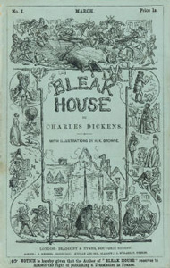

Sir Leicester Dedlock and his wife Honoria live on his estate at Chesney Wold. Unknown to Sir Leicester, and before she married, Lady Dedlock had a lover, Captain Hawdon, and had a daughter by him. Lady Dedlock believes her daughter is dead.
The daughter, Esther, is in fact alive and being raised by Miss Barbary, Lady Dedlock's sister. Esther does not know Miss Barbary is her aunt. After Miss Barbary dies, John Jarndyce becomes Esther's guardian and assigns the Chancery lawyer "Conversation" Kenge to take charge of her future. After attending school for six years, Esther moves in with him at Bleak House.
Jarndyce simultaneously assumes custody of two other wards, Richard Carstone and Ada Clare (who are both his and one another's distant cousins). They are beneficiaries in one of the wills at issue in Jarndyce and Jarndyce; their guardian is a beneficiary under another will, and the two wills conflict. Richard and Ada soon fall in love, but though Mr Jarndyce does not oppose the match, he stipulates that Richard must first choose a profession. Richard first tries a career in medicine, and Esther meets Allan Woodcourt, a physician, at the house of Richard's tutor. When Richard mentions the prospect of gaining from the resolution of Jarndyce and Jarndyce, John Jarndyce beseeches him never to put faith in what he calls "the family curse".
Meanwhile, Lady Dedlock is also a beneficiary under one of the wills. Early in the book, while listening to the reading of an affidavit by the family solicitor, Mr Tulkinghorn, she recognises the handwriting on the copy. The sight affects her so much she almost faints, which Tulkinghorn notices and investigates. He traces the copyist, a pauper known only as "Nemo", in London. "Nemo" has recently died, and the only person to identify him is a street-sweeper, a poor homeless boy named Jo, who lives in a particularly grim and poverty-stricken part of the city known as Tom-All-Alone's ("Nemo" is Latin for "nobody").
Lady Dedlock is also investigating, disguised as her maid, Mademoiselle Hortense. Lady Dedlock pays Jo to take her to "Nemo's" grave. Meanwhile, Tulkinghorn is concerned Lady Dedlock's secret could threaten the interests of Sir Leicester and watches her constantly, even enlisting her maid to spy on her. He also enlists Inspector Bucket to run Jo out of town, to eliminate any loose ends that might connect "Nemo" to the Dedlocks.
Esther sees Lady Dedlock at church and talks with her later at Chesney Wold – though neither woman recognises their connection. Later, Lady Dedlock does discover that Esther is her child. However, Esther has become sick (possibly with smallpox, since it severely disfigures her) after nursing the homeless boy Jo. Lady Dedlock waits until Esther has recovered before telling her the truth. Though Esther and Lady Dedlock are happy to be reunited, Lady Dedlock tells Esther they must never acknowledge their connection again.
Upon her recovery, Esther finds that Richard, having failed at several professions, has disobeyed his guardian and is trying to push Jarndyce and Jarndyce to conclusion in his and Ada's favour. In the process, Richard loses all his money and declines in health. He and Ada have secretly married, and Ada is pregnant. Esther has her own romance when Mr Woodcourt returns to England, having survived a shipwreck, and continues to seek her company despite her disfigurement. Unfortunately, Esther has already agreed to marry her guardian, John Jarndyce.
Hortense and Tulkinghorn discover the truth about Lady Dedlock's past. After a confrontation with Tulkinghorn, Lady Dedlock flees her home, leaving a note apologising for her conduct. Tulkinghorn dismisses Hortense, who is no longer of any use to him. Feeling abandoned and betrayed, Hortense kills Tulkinghorn and seeks to frame Lady Dedlock for his murder. Sir Leicester, discovering his lawyer's death and his wife's flight, suffers a catastrophic stroke, but he manages to communicate that he forgives his wife and wants her to return.
Inspector Bucket, who has previously investigated several matters related to Jarndyce and Jarndyce, accepts Sir Leicester's commission to find Lady Dedlock. At first he suspects Lady Dedlock of the murder but is able to clear her of suspicion after discovering Hortense's guilt, and he requests Esther's help to find her. Lady Dedlock has no way to know of her husband's forgiveness or that she has been cleared of suspicion, and she wanders the country in cold weather before dying at the cemetery of her former lover, Captain Hawdon ("Nemo"). Esther and Bucket find her there.
Progress in Jarndyce and Jarndyce seems to take a turn for the better when a later will is found, which revokes all previous wills and leaves the bulk of the estate to Richard and Ada. Meanwhile, John Jarndyce cancels his engagement to Esther, who becomes engaged to Mr Woodcourt. They go to Chancery to find Richard. On their arrival, they learn that the case of Jarndyce and Jarndyce is finally over, but the costs of litigation have entirely consumed the estate. Richard collapses, and Mr Woodcourt diagnoses him as being in the last stages of tuberculosis. Richard apologises to John Jarndyce and dies. John Jarndyce takes in Ada and her child, a boy whom she names Richard. Esther and Woodcourt marry and live in a Yorkshire house which Jarndyce gives to them. The couple later raise two daughters.
Many of the novel's subplots focus on minor characters. One such subplot is the hard life and happy, though difficult, marriage of Caddy Jellyby and Prince Turveydrop. Another plot focuses on George Rouncewell's rediscovery of his family, and his reunion with his mother and brother.
In the late nineteenth century, actress Fanny Janauschek acted in a stage version of Bleak House in which she played both Lady Dedlock and her maid Hortense. The two characters never appear on stage at the same time.
1876 - Jo, John Pringle Burnett's play found success in London with his wife, Jennie Lee, playing Jo, the crossing-sweeper.
1893 - Bleak House, a staged version with Jane Coombs.
1901 - The Death of Poor Joe, a short film which is the oldest known surviving film featuring a Charles Dickens character (Jo in Bleak House).
1920 - Bleak House, a silent film, featuring Constance Collier as Lady Dedlock.
1922 - Bleak House, a second silent film, featuring Sybil Thorndike as Lady Dedlock.
1928 - Bleak House, a short film made in the UK in the Phonofilm sound-on-film process starred Bransby Williams as Grandfather Smallweed.
1959 - Bleak House, the first of three BBC television adaptations, this one in eleven half-hour episodes.
1985 - Bleak House, the second BBC television adaptation, starring Diana Rigg and Denholm Elliott, as an eight-part series.
1998 - Bleak House, BBC Radio 4 radio adaptation of five hour-long episodes, starring Michael Kitchen as John Jarndyce.
2005 - Bleak House, the third BBC television adaptation broadcast in fifteen episodes starring Anna Maxwell Martin, Gillian Anderson, Denis Lawson, Charles Dance and Carey Mulligan. It won a Peabody Award that same year because it "created 'appointment viewing', soap-style, for a series that greatly rewarded its many extra viewers."